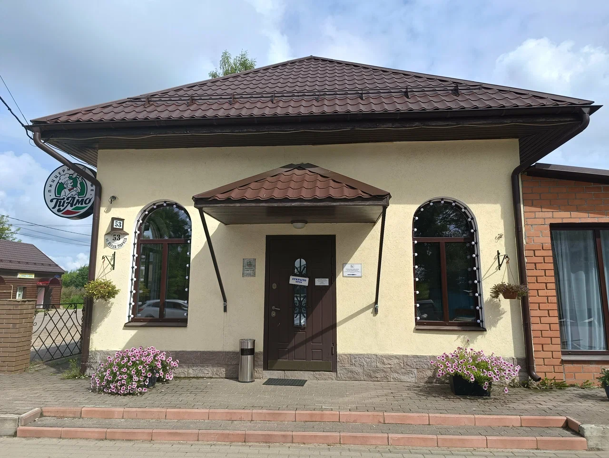
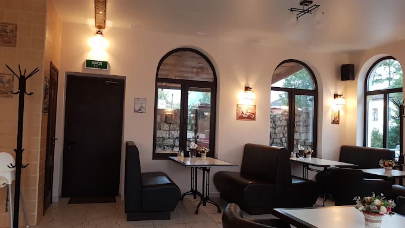
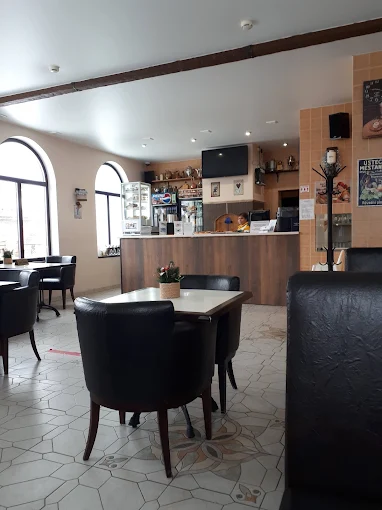
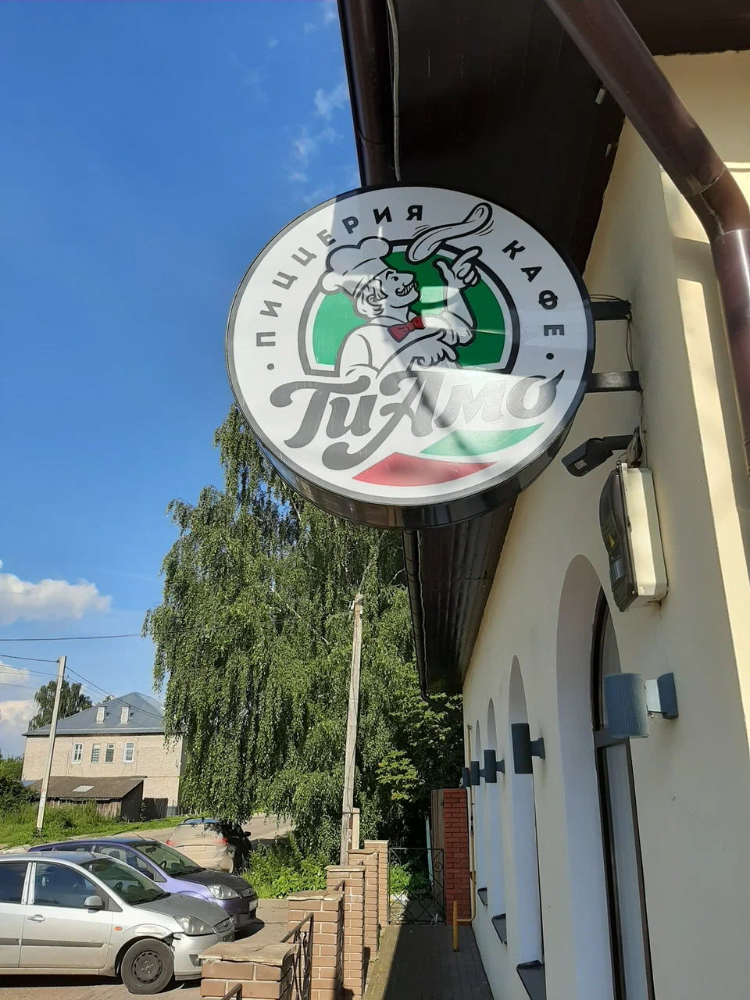
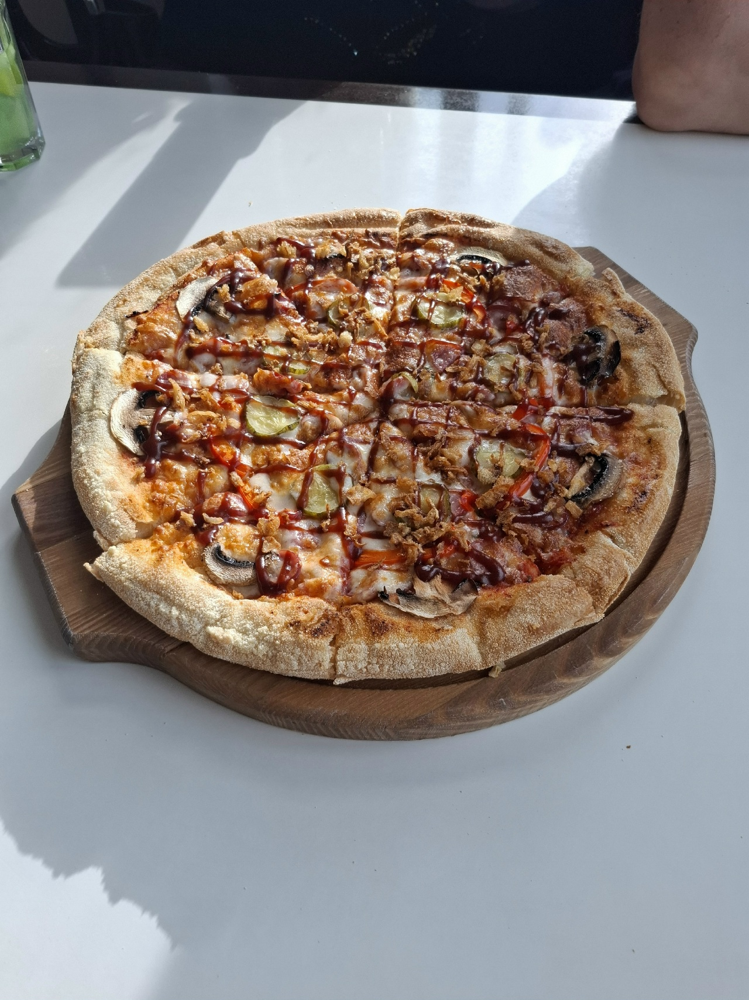
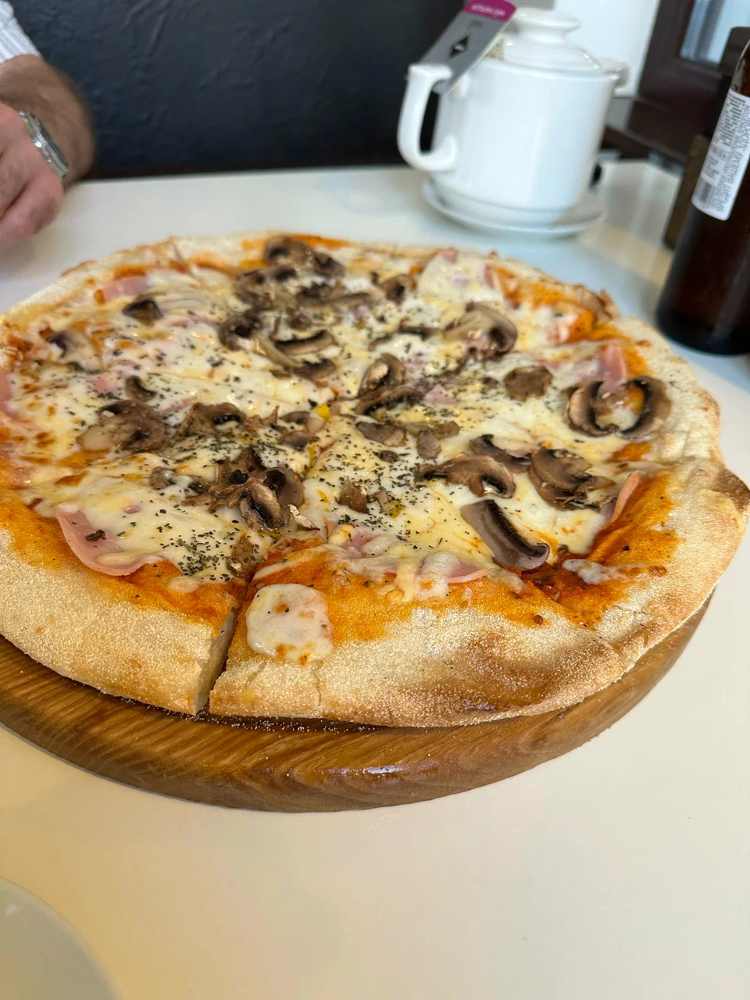
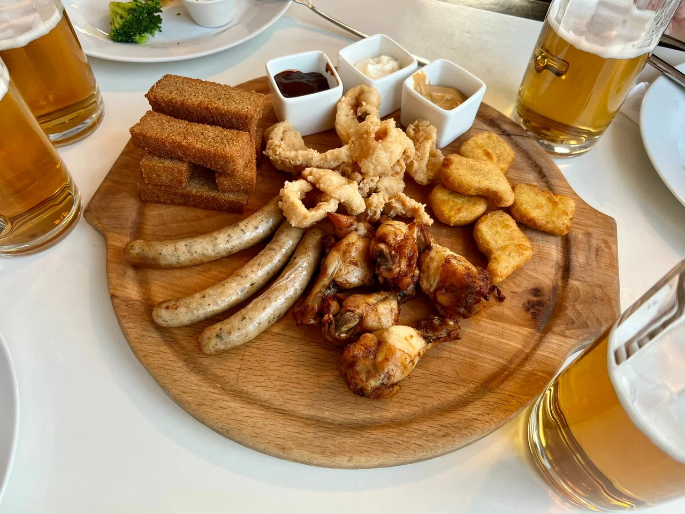
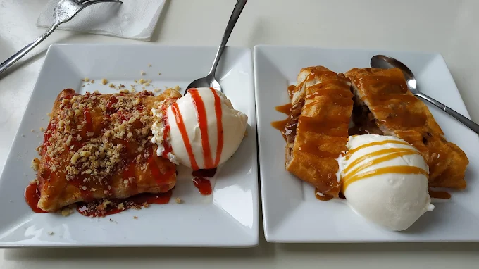

Гипотеза
Использование доступных LLM-моделей позволяет владельцу малого бизнеса без профильного маркетингового образования сократить время на анализ клиентского опыта с 10 часов в месяц до 15 минут, сохраняя точность выводов на уровне 80-85%.
ИИ-инструментарий
ChatGPT (LLM) в роли Senior CX-аналитика. Использован агентный подход для кластеризации данных.
Объем данных
15 развернутых отзывов из 3-х гео-сервисов (Google, Яндекс, 2ГИС).
Визуальный контекст








База отзывов для анализа
Отзывы Google (5)
Отзывы 2ГИС (5)
Отзывы Яндекс (5)
Сводная семантическая карта (Анализ ИИ)
| Кластер | Инсайт | Частота | Приоритет |
|---|---|---|---|
| Сервис / Персонал | Официанты не знают меню, путают блюда. Нет приветствия. | 13/15 | Критический |
| Скорость | Системное ожидание без коммуникации со стороны персонала. | 10/15 | Критический |
| Качество продукта | Пицца отличная, но есть вопросы к наличию блюд из меню. | 12/15 | Высокий |
Показать промпт для ИИ-исследователя
Настроение
«Кухня сильная, но сервис тянет рейтинг вниз»
Итоговая оценка по категориям
Анализ неэффективности заведения
«Продукт удерживает клиента. Сервис его выталкивает.»
Разрыв между качеством продукта и уровнем сервиса вызван системными сбоями, а не ошибками сотрудников. Отсутствие Table Management: нет стандарта управления посадкой и очередью. Это ведет к потере гостей, простоям столов и искажению данных о загрузке. Слабое управление ожиданиями: клиенты не получают актуальной информации о времени заказа. Отсутствие регламента коммуникации в случае задержек лишает заведение возможности сохранить лояльность гостя. Решение: необходимо внедрение чек-листов контроля времени, обучение персонала проактивному информированию и создание системы мониторинга занятости столов.
3 Неочевидных открытия
Деньги теряются у двери
Клиент решает, вернется ли он, еще до того, как попробовал пиццу — на этапе встречи и первого контакта.
Маленький зал = риск
В камерном заведении каждая ошибка официанта заметна всем. Равнодушный сотрудник становится лицом бренда.
Потенциал "Destined Place"
Люди готовы ехать из других городов ради вкуса. Осталось дотянуть сервис до уровня продукта.
Критическая оценка работы ИИ (Self-Reflection)
- Риск галлюцинаций: ИИ пытался предположить средний чек, не имея данных. Вывод был исключен из доклада.
- Локальный контекст: ИИ не учитывает специфику малого города, предлагая слишком "корпоративные" решения.
- Необходимость валидации: Каждый кластер был проверен вручную на соответствие цитатам из Яндекс.Карт.